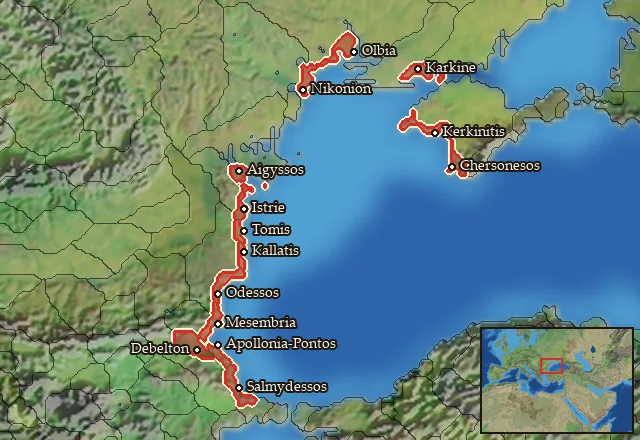

RTR: Imperium Surrectum
RTR: Imperium SurrectumRIS wiki › mercenaries
Euxine Coast
← all mercenary pools · wiki index
Mercenary pool: 3 units for hire in 14 regions.

Mercenaries
| Unit | Cost (dn) | Experience | At start | Most in pool | Added per turn | Who can hire | |
|---|---|---|---|---|---|---|---|
| Mercenary Hoplites | 3,090 | 0 | 1 | 2 | 0.2137–0.4273 | Any faction | |
| Mercenary Thureophoroi | 3,305 | 0 | 1 | 2 | 0.1998–0.3995 | Any faction | |
| Mercenary Greek Peltasts | 2,811 | 0 | 1 | 2 | 0.2349–0.4697 | Any faction |
Regions (14)
Aigyssia · Antheia · Halmyris · Hellenike Tyragetia · Hesperos Chersonesos · Kallatia · Karkinitis · Kyrmianaia-Nipsaia · Mesambria · Mikra Chersonesos · Odessia · Olbiana · Thynia · Tomea